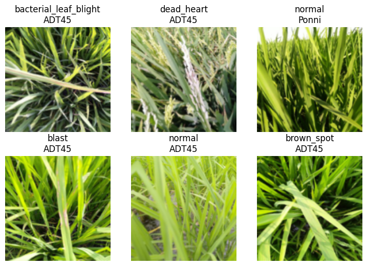
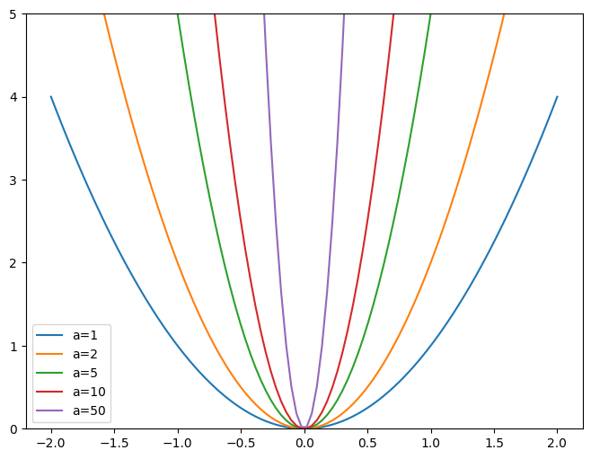

In this lesson, Jeremy explains Collaborative Filtering and how its application in recommendation systems and continues the discussion of how to iterate solutions for the Paddy Doctor: Paddy Disease Classification challenge.
The section on cross-entropy loss was difficult for me but rewatching Jeremy’s discussion of the math and writing the code helped me understand the math.
Jeremy Howard’s Advice
The stuff that happens in the first layer of the model and the last layer including the loss function that sits between the last layer and the loss are very important in deep learning
Terminology
Ensemble - model which is itself the result of combining a number of other models. The simplest way to do ensembling is to take the average of the predictions of each model.
Gradient Accumulation - rather than updating the model weights after ever batch based on that batch’s gradients, instead keep accumulating (adding) the gradients for a few batches, and thenupdate the model weights with those accumulated gradients.
Collaborative Filtering (Recommendation Systems) - look at what products the current user has used or liked, find other users that hae used or liked similar products and then recommend other products that those users have used or liked.
Latent Factors - Find what features matter. In the movie case study, the latent factors are what things matter most to a person when they choose to watch a particular movie.
Embeddings - special layer in pytorch that indexes into a vector using an integer, and has its derivative calculated in such a way that it is identical to what would have been if it had done a matrix multiplication with a one-hot-encoded vector.
Weight Decay - weight decay or L2 Regularization is adding to your loss function the sum of all the weights squared. When computing the gradients, this forces the weights to be as small as possibl. This helps prevent overfitting because the larger the coefficients are, the sharper the canyons appear in the loss function
Cross Entropy Loss
Cross Entropy Loss is confusing to understand just by looking at the math equations in the pytorch documentation. Here I will try my best to explain how it works.
Like the other loss functions Jeremy has talked about cross entropy loss is a loss function we are using to determine how good our model is. In order to compute the cross entropy loss we do the following steps:
Compute the SoftMax
Compute the Cross Entropy Loss using the SoftMax
SoftMax
In the FastAI Lesson 7 video, Jeremy uses an example with five different image classes: cat, dog, plane, fish, building with the goal of predicting whether some image is one of those categories. I will be using the same example.
Given some random weights and after doing some work, the image model will output 5 output values corresponding to the image classes from above:
cat = -4.89 dog = 2.60 plane = 0.59 fish = -2.07 building = -4.57
To use these values in cross entropy loss, they need to be converted to probabilities. Softmax is a function that converts numbers to probabilities using the following equation: \[\frac{e^{z_{i}}}{\sum_{j=1}^{K}e^{z_{j}}}\]
In the equation, K represents the number of categories, zj and zirepresents the output value for the corresponding category. Adding up the softmax results for each category, we get a total of 1.0 because the sum of all probabilities in an experiment is 1.0.
Cross Entropy
The cross entropy function is defined as the following: \[-\sum_{i=1}^{M}y_{i}\log{p(y_{i})} + (1 - y_{i})\log(1 - p(y_{i}))\]
In the equation, M represents the number of categories and yi represents the category.
Using the probabilities calculated by the softmax function we can simplify the cross entropy function to the following: -sum(actual target value * log(prediction probability)).
Cross Entropy is finding the probability of the target class where the actual target value is 1 and then taking the log of the probability - where 1 is the correct value and 0 is the incorrect value.
In the equation, the sum represents the total over the number of trials, yi represents the label.
Load Data and Libraries
# import libraries and files# required libraries + packages for any ml/data science projectimport numpy as npimport pandas as pdimport matplotlib.pyplot as pltimport torch# fastai library contains all the packages above and wraps them in the fastai library!pip install -Uqq fastai# install PyTorch Image Models (TIMM)!pip install timm==0.6.13# kaggle API package install!pip install kaggle!pip install pynvml
Collecting timm==0.6.13
Downloading timm-0.6.13-py3-none-any.whl (549 kB)
━━━━━━━━━━━━━━━━━━━━━━━━━━━━━━━━━━━━━━━━ 549.1/549.1 kB 2.9 MB/s eta 0:00:00
Requirement already satisfied: torch>=1.7 in /usr/local/lib/python3.10/dist-packages (from timm==0.6.13) (2.1.0+cu121)
Requirement already satisfied: torchvision in /usr/local/lib/python3.10/dist-packages (from timm==0.6.13) (0.16.0+cu121)
Requirement already satisfied: pyyaml in /usr/local/lib/python3.10/dist-packages (from timm==0.6.13) (6.0.1)
Requirement already satisfied: huggingface-hub in /usr/local/lib/python3.10/dist-packages (from timm==0.6.13) (0.20.3)
Requirement already satisfied: filelock in /usr/local/lib/python3.10/dist-packages (from torch>=1.7->timm==0.6.13) (3.13.1)
Requirement already satisfied: typing-extensions in /usr/local/lib/python3.10/dist-packages (from torch>=1.7->timm==0.6.13) (4.9.0)
Requirement already satisfied: sympy in /usr/local/lib/python3.10/dist-packages (from torch>=1.7->timm==0.6.13) (1.12)
Requirement already satisfied: networkx in /usr/local/lib/python3.10/dist-packages (from torch>=1.7->timm==0.6.13) (3.2.1)
Requirement already satisfied: jinja2 in /usr/local/lib/python3.10/dist-packages (from torch>=1.7->timm==0.6.13) (3.1.3)
Requirement already satisfied: fsspec in /usr/local/lib/python3.10/dist-packages (from torch>=1.7->timm==0.6.13) (2023.6.0)
Requirement already satisfied: triton==2.1.0 in /usr/local/lib/python3.10/dist-packages (from torch>=1.7->timm==0.6.13) (2.1.0)
Requirement already satisfied: requests in /usr/local/lib/python3.10/dist-packages (from huggingface-hub->timm==0.6.13) (2.31.0)
Requirement already satisfied: tqdm>=4.42.1 in /usr/local/lib/python3.10/dist-packages (from huggingface-hub->timm==0.6.13) (4.66.1)
Requirement already satisfied: packaging>=20.9 in /usr/local/lib/python3.10/dist-packages (from huggingface-hub->timm==0.6.13) (23.2)
Requirement already satisfied: numpy in /usr/local/lib/python3.10/dist-packages (from torchvision->timm==0.6.13) (1.25.2)
Requirement already satisfied: pillow!=8.3.*,>=5.3.0 in /usr/local/lib/python3.10/dist-packages (from torchvision->timm==0.6.13) (9.4.0)
Requirement already satisfied: MarkupSafe>=2.0 in /usr/local/lib/python3.10/dist-packages (from jinja2->torch>=1.7->timm==0.6.13) (2.1.5)
Requirement already satisfied: charset-normalizer<4,>=2 in /usr/local/lib/python3.10/dist-packages (from requests->huggingface-hub->timm==0.6.13) (3.3.2)
Requirement already satisfied: idna<4,>=2.5 in /usr/local/lib/python3.10/dist-packages (from requests->huggingface-hub->timm==0.6.13) (3.6)
Requirement already satisfied: urllib3<3,>=1.21.1 in /usr/local/lib/python3.10/dist-packages (from requests->huggingface-hub->timm==0.6.13) (2.0.7)
Requirement already satisfied: certifi>=2017.4.17 in /usr/local/lib/python3.10/dist-packages (from requests->huggingface-hub->timm==0.6.13) (2024.2.2)
Requirement already satisfied: mpmath>=0.19 in /usr/local/lib/python3.10/dist-packages (from sympy->torch>=1.7->timm==0.6.13) (1.3.0)
Installing collected packages: timm
Successfully installed timm-0.6.13
Requirement already satisfied: kaggle in /usr/local/lib/python3.10/dist-packages (1.5.16)
Requirement already satisfied: six>=1.10 in /usr/local/lib/python3.10/dist-packages (from kaggle) (1.16.0)
Requirement already satisfied: certifi in /usr/local/lib/python3.10/dist-packages (from kaggle) (2024.2.2)
Requirement already satisfied: python-dateutil in /usr/local/lib/python3.10/dist-packages (from kaggle) (2.8.2)
Requirement already satisfied: requests in /usr/local/lib/python3.10/dist-packages (from kaggle) (2.31.0)
Requirement already satisfied: tqdm in /usr/local/lib/python3.10/dist-packages (from kaggle) (4.66.1)
Requirement already satisfied: python-slugify in /usr/local/lib/python3.10/dist-packages (from kaggle) (8.0.4)
Requirement already satisfied: urllib3 in /usr/local/lib/python3.10/dist-packages (from kaggle) (2.0.7)
Requirement already satisfied: bleach in /usr/local/lib/python3.10/dist-packages (from kaggle) (6.1.0)
Requirement already satisfied: webencodings in /usr/local/lib/python3.10/dist-packages (from bleach->kaggle) (0.5.1)
Requirement already satisfied: text-unidecode>=1.3 in /usr/local/lib/python3.10/dist-packages (from python-slugify->kaggle) (1.3)
Requirement already satisfied: charset-normalizer<4,>=2 in /usr/local/lib/python3.10/dist-packages (from requests->kaggle) (3.3.2)
Requirement already satisfied: idna<4,>=2.5 in /usr/local/lib/python3.10/dist-packages (from requests->kaggle) (3.6)
Collecting pynvml
Downloading pynvml-11.5.0-py3-none-any.whl (53 kB)
━━━━━━━━━━━━━━━━━━━━━━━━━━━━━━━━━━━━━━━━ 53.1/53.1 kB 897.6 kB/s eta 0:00:00
Installing collected packages: pynvml
Successfully installed pynvml-11.5.0
from fastai.imports import*import osfrom pathlib import Pathimport zipfile'''Function for loading kaggle datasets locally or on kaggleReturns a local path to data files- input: Kaggle API Login Credentials, Kaggle Contest Name '''def loadData(creds, dataFile):# variable to check whether we're running on kaggle website or not iskaggle = os.environ.get('KAGGLE_KERNEL_RUN_TYPE', '')# path for kaggle API credentials cred_path = Path('~/.kaggle/kaggle.json').expanduser()ifnot cred_path.exists(): cred_path.parent.mkdir(exist_ok=True) cred_path.write_text(creds) cred_path.chmod(0o600)# Download data from Kaggle to path and extract files at path location# local machine path = Path(dataFile)ifnot iskaggle andnot path.exists():import kaggle kaggle.api.competition_download_cli(str(path)) zipfile.ZipFile(f'{path}.zip').extractall(path)# kaggleif iskaggle: fileName ='../input/'+ dataFile path = fileNamereturn path
# - bacterial panicle blight has the least files so use that for testing models and imagestrn_path = path/'train_images'/'bacterial_panicle_blight'
# - finetune argument to specify whether to run fine_tune() or the fit_one_cycyle() -> fit_one_cycle()# is faster since it doesn't do an intiial fine-tuning of the head# - In the finetune function the TTA predictions on the test set are calculated and returned# - accum argument is used for calculating gradient accumulationdef train(arch, size, item=Resize(480, method='squish'), accum=1, finetune=True, epochs=12): dls = ImageDataLoaders.from_folder(trn_path, valid_pct=0.2, item_tfms=item, batch_tfms=aug_transforms(size=size, min_scale=0.75), bs=64//accum) cbs = GradientAccumulation(64) if accum else [] learn = vision_learner(dls, arch, metrics=error_rate, cbs=cbs).to_fp16()if finetune: learn.fine_tune(epochs, 0.01)return learn.tta(dl=dls.test_dl(test_files))else: learn.unfreeze() learn.fit_one_cycle(epochs, 0.01)
Gradient Accumulation
fastai has a GradientAccumulation parameter that you pass to define how many batches of gradients are accumulated
After adding up all the gradients over accum batches, we need to divide the batch size by that number
the resulting loop is nearly identical to using the original batch size but the amount of memory used is the same as using a batch size accum times smaller
# single epoch training loop without gradient accumulation# for x, y in dl:# calc_loss(coeffs, x, y).backward()# coeffs.data.sub_(coeffs.grad * lr)# coeffs.grad.zero_()
# gradient accumulation added (assuming a target effective batch size of 64)# # number of items seen since last weight update# count = 0# for x,y in dl:# # update count based on this minibatch size# count += len(x)# calc_loss(coeffs, x, y).backward()# # count is greater than accumulation target, so do weight update# if count > 64:# coeffs.data.sub_(coeffs.grad * lr)# coeffs.grad.zero_()# # reset count# count = 0
Downloading: "https://github.com/SwinTransformer/storage/releases/download/v2.0.0/swinv2_large_patch4_window12_192_22k.pth" to /root/.cache/torch/hub/checkpoints/swinv2_large_patch4_window12_192_22k.pth
Downloading: "https://github.com/SwinTransformer/storage/releases/download/v1.0.0/swin_large_patch4_window7_224_22kto1k.pth" to /root/.cache/torch/hub/checkpoints/swin_large_patch4_window7_224_22kto1k.pth
# switch to all training imagestrn_path = path/'train_images'
# - each model is using different training and validation sets so results are not comparable# - append each set of TTA predictions on the test set into the tta_res listtta_res = []for arch,details in models.items():for item,size in details:print('---',arch)print(size)print(item.name) tta_res.append(train(arch, size, item=item, accum=2)) #, epochs=1)) gc.collect() torch.cuda.empty_cache()
# save all resultssave_pickle('tta_res.pkl', tta_res)
# - Learner.tta returns predictions and targets for each row# get predictionstta_prs = first(zip(*tta_res))
# - Jeremy's experiments and research figured out that vit was a better than all the other models# - Based on the experiments, vit has double the weight in the ensemble# - vit double weight -> add vit results to the ensemble (or compute a weighted average)tta_prs += tta_prs[1:3]
# - ensemble: a model which is itself the result of combining a number of other models# - simplest way of ensembling is to take the average of the predictions of each modelavg_pr = torch.stack(tta_prs).mean(0)print(f"avg prediction shape: {avg_pr.shape}")print(f"avg prediction rank: {len(avg_pr.shape)}")
# Dataloader + Datablock setupdls = DataBlock(# - create an image(contents of file), 2 categorical variables(disease and variety) blocks=(ImageBlock,CategoryBlock,CategoryBlock),# - 1 input(the image), 2 outputs(disease category, variety category) n_inp=1,# - get list of inputs (image files) get_items=get_image_files,# - create the outputs for each image file (parent image label, variety(from variety function)) get_y = [parent_label,get_variety],# - split data into 80% training, 20% validation splitter=RandomSplitter(0.2, seed=42),# - batch transforms item_tfms=Resize(192, method='squish'), batch_tfms=aug_transforms(size=128, min_scale=0.75)).dataloaders(trn_path)
# batch analysisdls.show_batch(max_n=6)

Disease Model
metric and loss function will take three inputs:
model outputs(metric and loss function inputs)
two targets (disease and variety)
Metric + Loss Functions
# metric and loss functions# metric functiondef disease_err(inp,disease,variety):return error_rate(inp,disease)# loss function - cross entropydef disease_loss(inp,disease,variety):return F.cross_entropy(inp,disease)
# - to predict probability of disease and variety we need model to output a tensor of length 20# 10 possible diseases, 10 possible varities -> n_out=20 sets this uplearn = vision_learner(dls, arch, n_out=20).to_fp16()
Metric + Loss Functions
# loss functions# - input tensor is length 20 but need to use first 10 values for disease# disease lossdef disease_loss(inp, disease, variety):return F.cross_entropy(inp[:,:10],disease)# variety lossdef variety_loss(inp,disease,variety):return F.cross_entropy(inp[:,10:],variety)# total lossdef combine_loss(inp,disease,variety):return disease_loss(inp,disease,variety) + variety_loss(inp,disease,variety)
# set up some stufffrom fastai.collab import*from fastai.tabular.allimport*set_seed(42)
# movie datasetpath = untar_data(URLs.ML_100k)
100.15% [4931584/4924029 00:00<00:00]
# load data filesratings = pd.read_csv(path/'u.data', delimiter='\t', header=None, names=['user','movie','rating','timestamp'])
Exploratory Data Analysis
# exploratory analysisratings.head()
user
movie
rating
timestamp
0
196
242
3
881250949
1
186
302
3
891717742
2
22
377
1
878887116
3
244
51
2
880606923
4
166
346
1
886397596
Experiments
# - very science fiction = 0.98# - very action = 0.9# - very not as old = -0.9last_skywalker = np.array([0.98,0.9,-0.9])
# user who likes modern sci-fi movies# - very science fiction = 0.9# - very action = 0.8# - very not as old = -0.6user1 = np.array([0.9,0.8,-0.6])
# match between lastskywalker and user1(user1 * last_skywalker).sum()
2.1420000000000003
# - very science fiction = -0.99# - very action = -0.3# - very not as old = 0.8casablanca = np.array([-0.99,-0.3,0.8])# match between casablanca and user(user1 * casablanca).sum()
-1.611
Learning Latent Factors
gradient descent can be used to learn the latent factors
randomly initialize some parameters. parameters will be a set of latent factors for each user and movie
calculate predictions. take dot product of each movie and user. High number represents match, low number represents mismatch
calculate loss. mean square error is good for representing accuracy of a prediction
# movie datamovies = pd.read_csv(path/'u.item', delimiter='|', encoding='latin-1', usecols=(0,1), names=('movie','title'), header=None)movies.head()
movie
title
0
1
Toy Story (1995)
1
2
GoldenEye (1995)
2
3
Four Rooms (1995)
3
4
Get Shorty (1995)
4
5
Copycat (1995)
# movie + rating dataratings = ratings.merge(movies)ratings.head()
user
movie
rating
timestamp
title
0
196
242
3
881250949
Kolya (1996)
1
63
242
3
875747190
Kolya (1996)
2
226
242
5
883888671
Kolya (1996)
3
154
242
3
879138235
Kolya (1996)
4
306
242
5
876503793
Kolya (1996)
# Dataloaders# - first column is for the user# - second column is for the item (movies)# - third column is for the ratingdls = CollabDataLoaders.from_df(ratings, item_name='title', bs=64)dls.show_batch()
user
title
rating
0
542
My Left Foot (1989)
4
1
422
Event Horizon (1997)
3
2
311
African Queen, The (1951)
4
3
595
Face/Off (1997)
4
4
617
Evil Dead II (1987)
1
5
158
Jurassic Park (1993)
5
6
836
Chasing Amy (1997)
3
7
474
Emma (1996)
3
8
466
Jackie Chan's First Strike (1996)
3
9
554
Scream (1996)
3
# represent movie and user late factor table as matrices# - result = index of the move in movie latent factor matrix * index of the user in user late factor matrixn_users =len(dls.classes['user'])n_movies =len(dls.classes['title'])n_factors =5user_factors = torch.randn(n_users, n_factors)movie_factors = torch.randn(n_movies, n_factors)
Embeddings
# convert index lookup to matrix product# - replace indices with one-hot encoded vectors# multiply a vector by a one hot-encoded vector representing index 3one_hot_3 = one_hot(3, n_users).float()print(f"dot product of user factors and one-hot encoded three: {user_factors.t() @ one_hot_3}")print(f"vector at index 3 in user factor matrix: {user_factors[3]}")
dot product of user factors and one-hot encoded three: tensor([-0.4586, -0.9915, -0.4052, -0.3621, -0.5908])
vector at index 3 in user factor matrix: tensor([-0.4586, -0.9915, -0.4052, -0.3621, -0.5908])
# - input of the model is a tensor of shape batch_size x 2# - first column x[:0] contains user IDS# - second column x[:1] contains movie IDS# - embedding layers represent matrices of user and movie latent factorsx,y = dls.one_batch()x.shape
torch.Size([64, 2])
model = DotProduct(n_users, n_movies, 50)learn = Learner(dls, model, loss_func=MSELossFlat())
# train modellearn.fit_one_cycle(5, 5e-3)
epoch
train_loss
valid_loss
time
0
1.344786
1.279100
00:08
1
1.093331
1.109981
00:07
2
0.958258
0.990199
00:08
3
0.814234
0.894916
00:08
4
0.780714
0.882022
00:08
# force predictions to be between 0 and 5 (match the reviews)# - good to have range go a bit over 5class DotProduct(Module):def__init__(self, n_users, n_movies, n_factors, y_range=(0,5.5)):self.user_factors = Embedding(n_users, n_factors)self.movie_factors = Embedding(n_movies, n_factors)self.y_range = y_rangedef forward(self, x): users =self.user_factors(x[:,0]) movies =self.movie_factors(x[:,1])return sigmoid_range((users * movies).sum(dim=1), *self.y_range)
# Weight decay with parabolax = np.linspace(-2,2,100)a_s = [1,2,5,10,50]ys = [a * x**2for a in a_s]_,ax = plt.subplots(figsize=(8,6))for a,y inzip(a_s,ys): ax.plot(x,y, label=f'a={a}')ax.set_ylim([0,5])ax.legend()
<matplotlib.legend.Legend at 0x7ab900191d50>

# train movie model with weight decay parameter# - weight decay is parameter that controls the sum of squares added to loss function# - in practice it is very inefficient (and potentially numerically unstable) to compute large sums and add them to the loss# - fastai sets weight decay with weight decay parametermodel = DotProductBias(n_users, n_movies, 50)learn = Learner(dls, model, loss_func=MSELossFlat())learn.fit_one_cycle(5, 5e-3, wd=0.1)
epoch
train_loss
valid_loss
time
0
0.932776
0.961672
00:09
1
0.888625
0.882614
00:09
2
0.771066
0.832743
00:09
3
0.599807
0.822374
00:09
4
0.504981
0.822528
00:09
Embeddings from Scratch
# Embedding Module From Scratchclass T(Module):def__init__(self):self.a = nn.Linear(1, 3, bias=False)# self.a = nn.Parameter(torch.ones(3))t = T()L(t.parameters())# check type of tprint(f"T type: {type(t.a.weight)}")
T type: <class 'torch.nn.parameter.Parameter'>
# create tensor with random initializationdef create_params(size):return nn.Parameter(torch.zeros(*size).normal_(0, 0.01))
# DotProduct with bias (and without embedding)class DotProductBias(Module):def__init__(self, n_users, n_movies, n_factors, y_range=(0,5.5)):self.user_factors = create_params([n_users, n_factors])self.user_bias = create_params([n_users])self.movie_factors = create_params([n_movies, n_factors])self.movie_bias = create_params([n_movies])self.y_range = y_rangedef forward(self, x): users =self.user_factors[x[:,0]] movies =self.movie_factors[x[:,1]] res = (users*movies).sum(dim=1) res +=self.user_bias[x[:,0]] +self.movie_bias[x[:,1]]return sigmoid_range(res, *self.y_range)
# - biases are easiest to interpret# - movies with the lowest values in bias vector# - for each of these movies, even when a user is matched to its latent factors, they still don't generally like it# - does not tell us whether a movie is of a kind that people tend to enjoy watching but that people tend not to like# watching it even if it is of a kind they would otherwise enjoymovie_bias = learn.model.movie_bias.squeeze()idxs = movie_bias.argsort()[:5][dls.classes['title'][i] for i in idxs]
['Lawnmower Man 2: Beyond Cyberspace (1996)',
'Children of the Corn: The Gathering (1996)',
'Mortal Kombat: Annihilation (1997)',
'Amityville 3-D (1983)',
'Beautician and the Beast, The (1997)']
# movies with high biasidxs = movie_bias.argsort(descending=True)[:5][dls.classes['title'][i] for i in idxs]
['Titanic (1997)',
'Shawshank Redemption, The (1994)',
'Silence of the Lambs, The (1991)',
'L.A. Confidential (1997)',
"Schindler's List (1993)"]
# PCA analysis of the two strongest PCA componentsg = ratings.groupby('title')['rating'].count()top_movies = g.sort_values(ascending=False).index.values[:1000]top_idxs = tensor([learn.dls.classes['title'].o2i[m] for m in top_movies])movie_w = learn.model.movie_factors[top_idxs].cpu().detach()movie_pca = movie_w.pca(3)fac0,fac1,fac2 = movie_pca.t()idxs =list(range(50))X = fac0[idxs]Y = fac2[idxs]plt.figure(figsize=(12,12))plt.scatter(X, Y)for i, x, y inzip(top_movies[idxs], X, Y): plt.text(x,y,i, color=np.random.rand(3)*0.7, fontsize=11)plt.show()
# high bias moviesmovie_bias = learn.model.i_bias.weight.squeeze()idxs = movie_bias.argsort(descending=True)[:5][dls.classes['title'][i] for i in idxs]
['L.A. Confidential (1997)',
'Titanic (1997)',
'Shawshank Redemption, The (1994)',
'Silence of the Lambs, The (1991)',
'Rear Window (1954)']
Embedding Distance
# - distance between two movie embeddings can define two movies that are nearly identical # because users that would like them would be nearly exactly the same# find movie most similar to Silence of the Lambsmovie_factors = learn.model.i_weight.weightidx = dls.classes['title'].o2i['Silence of the Lambs, The (1991)']distances = nn.CosineSimilarity(dim=1)(movie_factors, movie_factors[idx][None])idx = distances.argsort(descending=True)[1]dls.classes['title'][idx]
'Before the Rain (Pred dozhdot) (1994)'
Deep Learning + Collaborative Filtering
# fastai has a function that returns the recommended size for embeddings matrices for your data based on a heuristic FastAI found# that works well in practiceembs = get_emb_sz(dls)embs
# create model and train itmodel = CollabNN(*embs)learn = Learner(dls, model, loss_func=MSELossFlat())learn.fit_one_cycle(5, 5e-3, wd=0.01)
epoch
train_loss
valid_loss
time
0
0.943857
0.951898
00:10
1
0.914082
0.898525
00:10
2
0.848892
0.884356
00:10
3
0.814803
0.875278
00:10
4
0.761398
0.878594
00:09
# model with hidden layers of 100 and 50learn = collab_learner(dls, use_nn=True, y_range=(0, 5.5), layers=[100,50])learn.fit_one_cycle(5, 5e-3, wd=0.1)